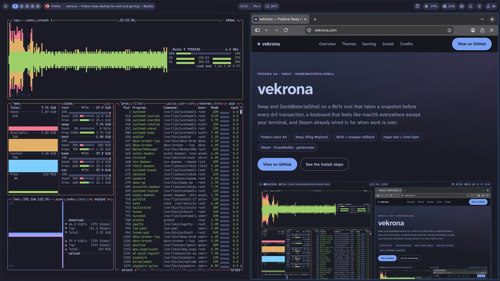
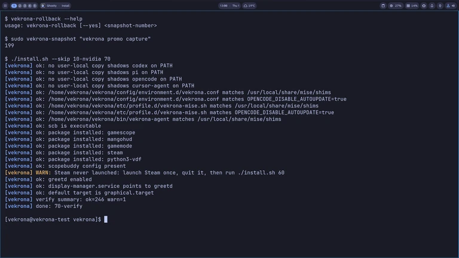
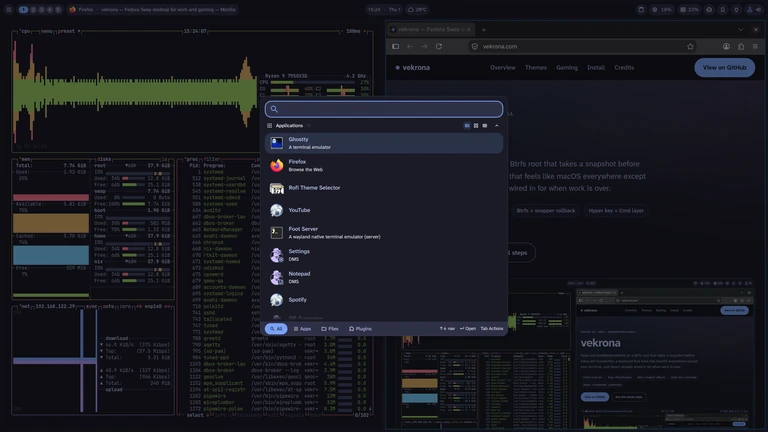
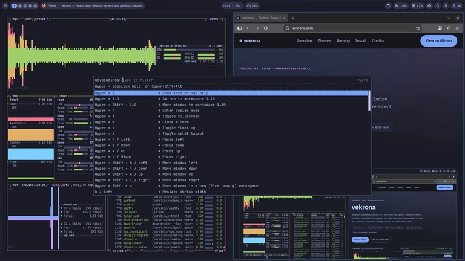
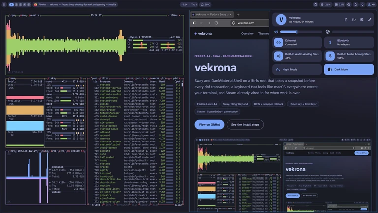
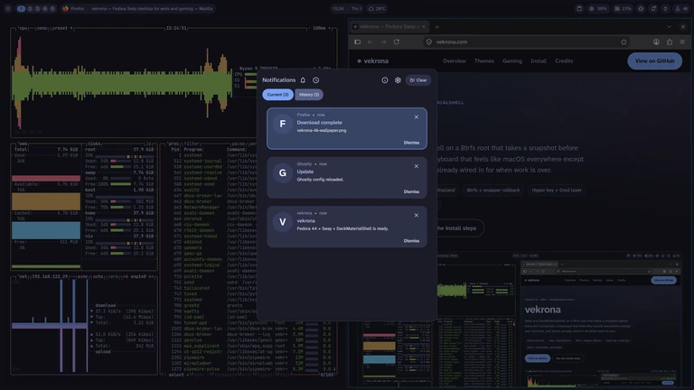
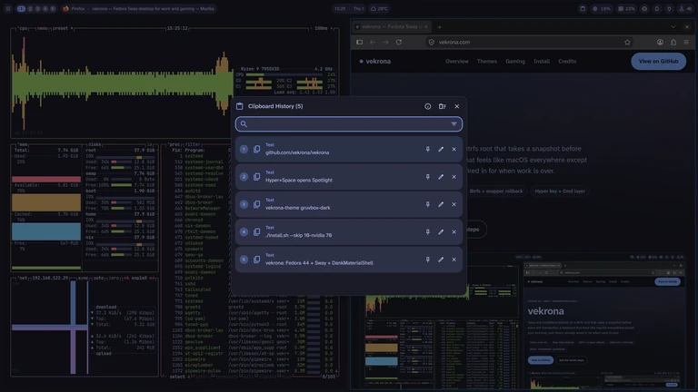
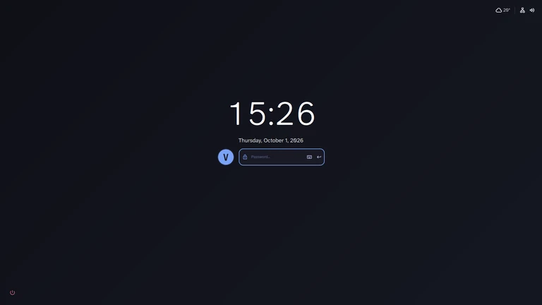
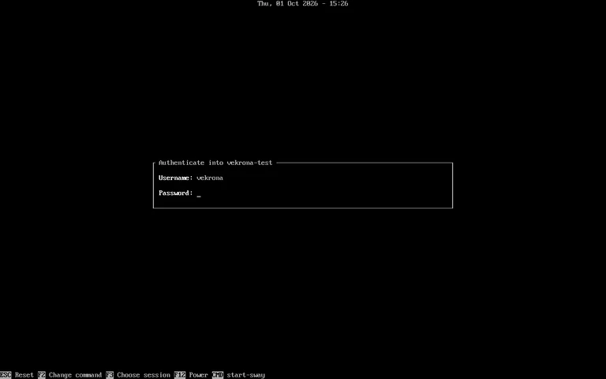

vekrona
Sway and DankMaterialShell on a Btrfs root that takes a snapshot before every dnf transaction, a keyboard that feels like macOS everywhere except your terminal, and Steam already wired in for when work is over.

What vekrona sets up
Snapshots and rollback
Fedora Linux 44 on a Btrfs root. Snapper takes a pre and post snapshot around every dnf transaction, and a bad update is undone with sudo vekrona-rollback 42 (42 being a snapshot number) instead of a reinstall.
Hyper key and Cmd shortcuts
Caps Lock becomes a Hyper key. Outside your terminals, Super acts as a Cmd key, so Cmd+C, Cmd+Z and Cmd+Left work as they do on a Mac. Pressing both Alt keys switches between the two configured layouts.
Tiling desktop with Steam installed
Sway tiles your windows. Steam, ScopeBuddy, gamescope, MangoHud and GameMode are installed, and the gamescope config is set to 3840×2160 at 240 Hz, the monitor this recipe was written for. Other displays need that config edited; see Gaming.
No account needed to install
The install asks you to sign up for nothing and creates only your local user. Chrome is not installed. YouTube, WhatsApp and Spotify run as Firefox webapps, and the shell is DankMaterialShell (DMS) on Quickshell.
Video tour, 61 seconds without sound
Workspaces, the Spotlight launcher, the shell panels, a theme switch, the installer’s verify stage and the lock screen, back to back, recorded in a virtual machine.
The video has no sound. Every scene carries its own on-screen caption, and the list below describes them in order.
Scene-by-scene description
- Title card: “vekrona”, “Fedora + Sway + DankMaterialShell”.
- The desktop with the bar on top; Hyper+2 switches to an empty workspace and Hyper+1 back. Caption: “Hyper + 1..0 — Sway workspaces, always visible”.
- The Spotlight launcher opens. Caption: “Hyper + Space — Spotlight”.
- The Control Center panel opens. Caption: “Hyper + , — Control Center”.
- The notification center opens. Caption: “Hyper + N — Notifications”.
- The clipboard history panel opens. Caption: “Hyper + V — Clipboard history”.
- The keybindings help panel opens. Caption: “Hyper + / — Keybindings help”.
- btop and a terminal change theme, one after another. Caption: “Hyper + Shift + T — Cycle themes”.
- A terminal runs the installer’s verify stage and leaves out the NVIDIA stage. Caption: “./install.sh --skip 10-nvidia 70 — Verify stage”.
- The lock screen: a password is typed and the session unlocks. Caption: “Hyper + Escape — Lock screen”.
- End card: “github.com/vekrona/vekrona”, “Fedora 44 · Sway · DankMaterialShell”.
Snapshots before every dnf transaction, and rollback
Stage 20-snapper assumes a Btrfs root. It installs snapper and the libdnf5 actions plugin, creates the snapper config for /, and enables the cleanup timer, which keeps the 10 most recent numbered snapshots. The plugin takes a pre and post snapshot around every dnf transaction. The stage also moves /nix onto its own subvolume, so a rollback leaves the Nix store alone.
It runs second, right after 00-repos and before 10-nvidia, so a snapshot exists before the driver is touched.
Before something riskier than an update, take a named snapshot yourself: vekrona-snapshot "before the qt6 upgrade" prints the snapshot number you’ll need if it goes wrong.
When it does go wrong: sudo vekrona-rollback 42 mounts the top-level subvolume, makes that snapshot the new root, and renames the old one to root.old-<timestamp> instead of deleting it. First it warns about any kernel in /boot that has no matching modules in the snapshot, because a rollback never touches /boot. It does not reboot for you. To look inside a snapshot without committing to it, edit the subvol= value on the GRUB boot entry and boot it read-only; the edit is not saved.


vekrona-rollback --help, a real snapshot, and a verify run, in one terminal.Caps Lock as Hyper, Super as Cmd
Held down, Caps Lock is Hyper (Ctrl+Alt+Super), the modifier for the window-management and launcher shortcuts on this desktop. Tapped alone within 300 ms, it sends Esc. xremap does the remapping.
Outside your terminals, Super works as a Cmd key. Every Super+letter is sent to the app as the same letter with Ctrl, so Cmd+C copies and Cmd+Z undoes. Cmd+Left goes to the start of the line (the app receives Home), and Cmd+Backspace deletes to the start of the line (the app receives Shift+Home, then Backspace). In ghostty, foot and wezterm the Cmd layer is off, so Ctrl+C still reaches the shell as Ctrl+C. Only Alt+Left and Alt+Right are remapped there, to Ctrl+Left and Ctrl+Right, which readline reads as word movement.
Pressing both Alt keys together switches between the two keyboard layouts, us and ua.
Launcher, window and workspace shortcuts
Hyper+Space opens Spotlight, the DankMaterialShell app launcher. Hyper+Enter opens a terminal (ghostty). Hyper+h/j/k/l or the arrow keys move focus; Hyper+1 through Hyper+0 switch workspaces; add Shift to move a window the same way instead of focusing it.
Hyper+/ opens a keybindings panel. It reads ~/.config/sway/config each time it opens and lists every binding with the description written above it in that file, so the list matches what is bound.




Control Center, notifications and clipboard history
These are DankMaterialShell panels running on Quickshell, each opened with a Hyper shortcut.






Four themes: tokyo-night, catppuccin-mocha, gruvbox-dark, nord
vekrona-theme next, or Hyper+Shift+t, switches to the next theme. It changes the DMS colors, the wallpaper and the terminal colors together. Each theme maps to one of Ghostty’s built-in themes, and open Ghostty windows reload over D-Bus, so no restart is needed.


Lock screen and login greeter
Hyper+Esc locks the session with the DankMaterialShell lock screen. At boot, greetd runs tuigreet, a text-mode greeter, which starts Sway with start-sway after you log in. There is no GDM or SDDM.
The password always works. A security key or a fingerprint reader, enrolled in the ISO installer or later, adds a second way to sign in: the key works for sudo and on the lock screen, the reader for sudo.




Gaming with Steam, ScopeBuddy and gamescope
Steam comes from RPM Fusion. Stage 60-gaming turns on Steam Play with proton_experimental for all titles. Set scb -- %command% as a game’s launch option and ScopeBuddy starts it inside gamescope, fullscreen at 3840×2160, 240 Hz, with adaptive sync. Under NVIDIA, wlroots can flicker in fullscreen games, and running the game in gamescope keeps it out of wlroots’ compositing. MangoHud’s config binds Shift_R+F12 to toggle its overlay. GameMode is installed as well.
This recipe is built around one desktop: a Ryzen 7950X3D, an RTX 4090 and a Dell AW3225QF (4K, 240 Hz) on output DP-7. Stage 10-nvidia installs the NVIDIA driver and runs only when an NVIDIA GPU is present and the machine is not a Mac, so other hardware skips it on its own. On a different NVIDIA machine, read the stage first: it sets kernel arguments (nvidia.NVreg_EnableGpuFirmware=0 and pcie_aspm=off) that were chosen on the RTX 4090. ./install.sh --skip 10-nvidia leaves it out. Edit the output line in config/sway/config and the resolution and refresh rate in config/scopebuddy/scb.conf to match your monitor. Stage 15-mac adds support for 2013–2015 MacBook Pros, but it has not been tested on real hardware. Everything else has only been tested on the author’s machine and in a VM.
- Steam
- ScopeBuddy
- gamescope
- MangoHud
- GameMode
Install on Fedora 44: script or ISO
Fresh install on Fedora minimal
Start from a Fedora 44 Everything netinstall with only @core selected: text console, no desktop. You need network access, a Btrfs root on a top-level subvolume named root, /home on a subvolume of the same filesystem, /boot on its own filesystem, and a user with sudo (install.sh refuses to run as root). That install has no git, so install it first:
sudo dnf install -y git
git clone https://github.com/vekrona/vekrona ~/wrk/vekrona
cd ~/wrk/vekrona
./install.shTwelve idempotent stages can run, in this order; ./install.sh --list prints the ones that apply to your machine. 10-nvidia runs only with an NVIDIA GPU and not on a Mac, and 15-mac only on Apple hardware. Reboot afterwards and log in through the greeter. If a run fails, run it again: stages only change what is still missing. 20-snapper comes before 10-nvidia so a snapshot exists before the driver install.
- 00-repos
- 20-snapper
- 10-nvidia
- 15-mac
- 30-packages
- 40-system
- 45-auth
- 50-user
- 55-agents
- 60-gaming
- 65-login-manager
- 70-verify
Install from ISO
iso/build.sh bakes the same repo into a Fedora 44 netinstall ISO with two extra installer screens. The first asks for your account (full name, username, host name) and time zone. The second asks for a password, which is both your login password and the disk encryption passphrase (Btrfs on LUKS2), so there is no second one to remember. It can also enroll a security key or a fingerprint reader.
Anaconda still handles disk selection and networking. On first boot the machine copies the checkout baked into the ISO to ~/vekrona, runs ./install.sh unattended and reboots into the same greetd login screen.
Accounts, Chrome and what the installer does
The install never asks you to sign up for anything: the one account it creates is your local Linux user. Steam, Spotify, WhatsApp, 1Password, Tailscale and the coding agents need their own accounts once you use them. Chrome isn’t installed. Firefox is, and YouTube, WhatsApp, and Spotify run as Firefox webapps in their own profiles (vekrona-webapp youtube, vekrona-webapp whatsapp, vekrona-webapp spotify). Spotify downloads Widevine’s DRM module on first launch, which is Spotify’s requirement, not vekrona’s. The installer is plain shell, one file per stage in stages/, so you can read what it does before you run it. vekrona doesn’t audit the packages it installs. This site loads no analytics script and requests nothing from other domains: its fonts are served from the same origin as the page.
Credits: what vekrona is built on
vekrona is a recipe, not a fork: it configures software that other people build and maintain. These are the main pieces it is built on. This site itself uses Atkinson Hyperlegible Next and JetBrains Mono, both under the SIL Open Font License.
Base
- Fedora Linux
- RPM Fusion / NVIDIA akmods
- facetimehd, MacBook camera driver
Desktop
Coding agents
- Claude Code
- Codex
- OpenCode
- Pi
- Cursor CLI
- mise, installs the last four
Gaming
Type
- JetBrainsMono Nerd Font, desktop monospace and terminal
- Atkinson Hyperlegible Next, desktop interface font
- Inter, desktop fallback for Cyrillic